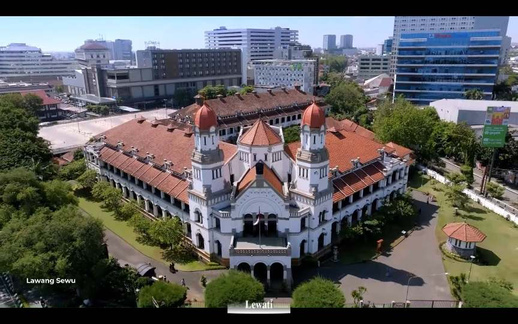
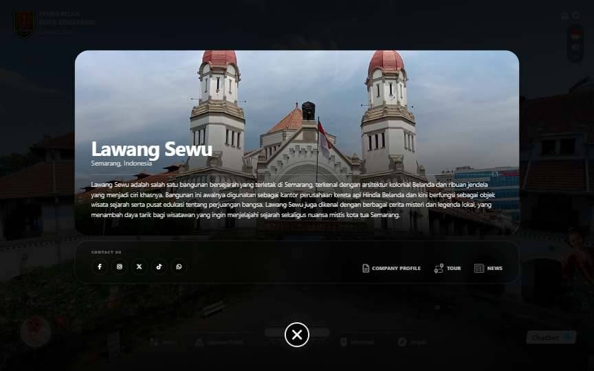
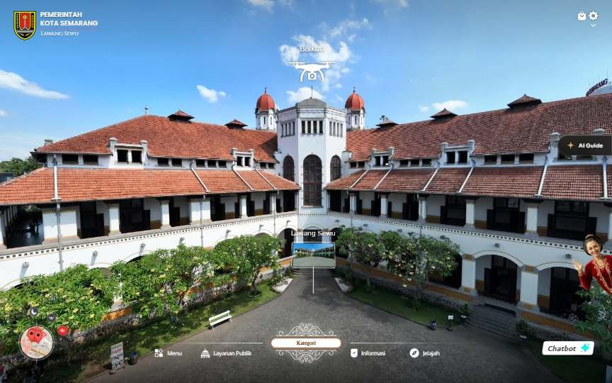
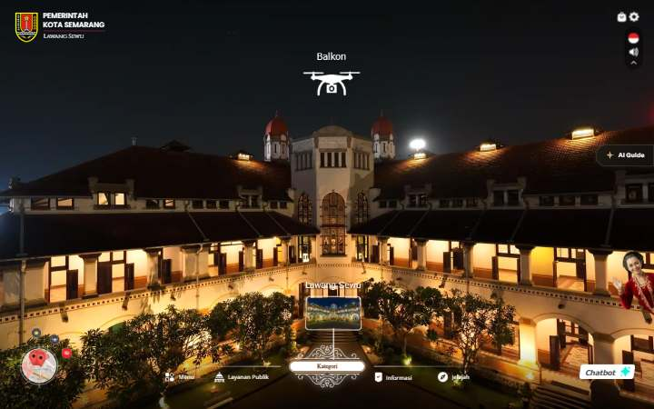
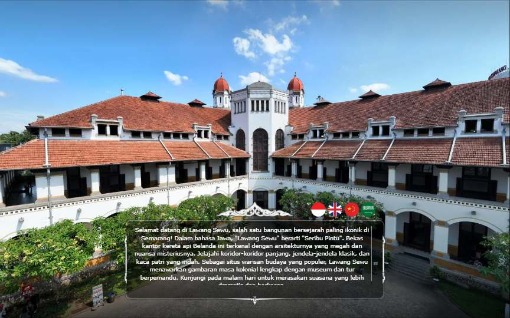
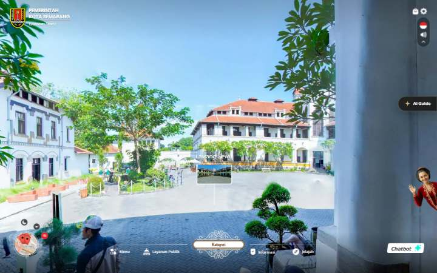
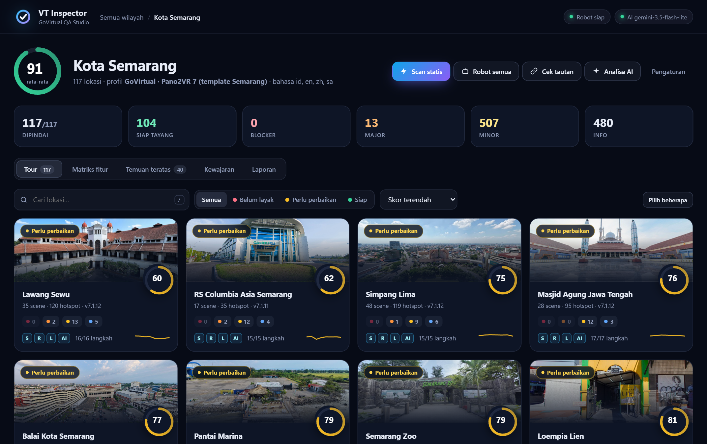
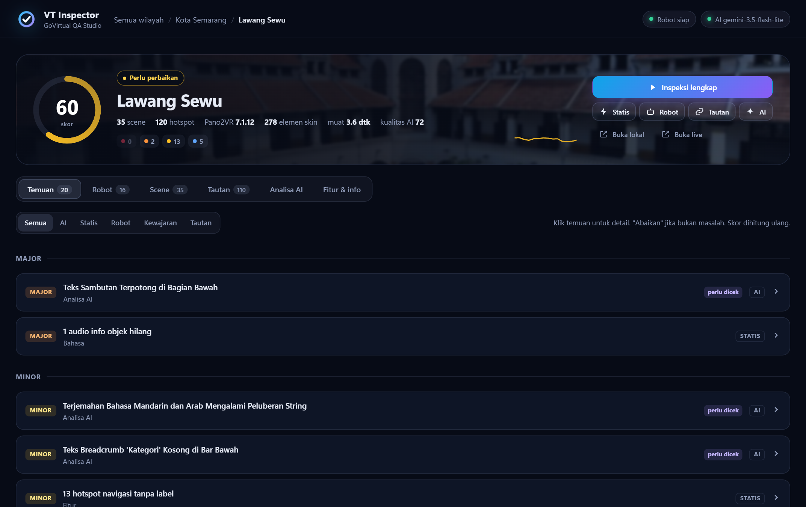

Robot yang memeriksa setiap virtual tour sebelum klien melihatnya, sehingga tour lebih berkualitas dan pengerjaan lebih cepat.
Video intro, tombol Skip, sambutan, 4 bahasa, audio, menu, popup, puluhan scene, ratusan hotspot, tampilan HP. Semua itu dicek manual, satu per satu.
QA manual satu tour bisa 1–2 jam. Untuk 50 lokasi, berarti 50–100 jam kerja hanya untuk mengecek.
Kesalahan kecil, seperti satu huruf di nama file audio, tidak terlihat mata, tetapi membuat fitur tidak berfungsi.
Setiap QA mengecek dengan caranya sendiri. Hasilnya tergantung siapa yang mengecek dan seberapa lelah.
Di pabrik mobil, setiap mobil melewati jalur inspeksi sebelum dikirim: rem dicek, lampu dicek, mesin dicoba. Mobil yang bermasalah tidak boleh keluar pabrik.
VT Inspector melakukan hal yang sama untuk virtual tour. Setiap tour diperiksa otomatis, hasilnya diberi skor, dan masalahnya ditunjukkan lengkap dengan bukti.
File, scene, audio, bahasa, fitur wajib
Robot menekan setiap tombol dan membuka setiap scene
Kualitas gambar, tampilan, dan terjemahan
Skor 0–100, status, bukti screenshot, laporan PDF
Setiap lapis menangkap jenis masalah yang berbeda, mirip pemeriksaan kesehatan lengkap.
Seperti mengecek kelengkapan dokumen. File hilang, nama salah, audio bahasa kurang.
±0,1 detik / tour
Seperti mystery shopper. Membuka tour di laptop & HP, menekan semua tombol.
±1,5 menit / tour
Memastikan semua popup, info objek, dan layanan luar bisa dibuka.
±10 detik / tour
Seperti kurator. Menilai gambar gelap/blur, teks terpotong, terjemahan janggal.
±20 detik / tour
Membandingkan dengan tour lain. "Tour ini hanya 5 scene, padahal rata-rata 22."
instan




Screenshot asli robot di Lawang Sewu
Nama file audio di folder:
Wisatawan yang memilih bahasa Mandarin dan membuka info Tugu Marmer tidak mendengar narasi apa pun.
QA harus memilih bahasa Mandarin, mencari Tugu Marmer di antara 35 scene, membuka infonya, lalu sadar audionya tidak bunyi. Hampir pasti terlewat.
Ditemukan otomatis dalam hitungan detik, lengkap dengan nama file yang salah dan bahasa yang terdampak.
patunggff tidak ada di Zie Batik, dan audio narasi Mandarin tidak lengkap di 1 tour.File gyro.js tidak ada di 3 tour. Di HP muncul error JavaScript, sehingga fitur gerak (gyro) tidak berfungsi.
ditemukan robot
Satu gambar di popup Kategori tidak ada di server (404). Popup ini dipakai semua tour Semarang.
ditemukan robot
Tour RS Columbia Asia memakai template lama: tidak punya tombol drone yang dimiliki 99% tour lain.
ditemukan analisa kewajaran
Di 117 dari 117 tour, judul halaman & pratinjau share kosong. Link yang dibagikan terlihat tidak profesional.
Bisa diperbaiki otomatis dengan satu klik (file asli dicadangkan dulu).
Folder backup dan file .bak ikut ter-publish di 117 tour. Bisa diunduh orang luar dan memakan ruang hosting.
Ada hal yang tidak bisa dicek dengan aturan pasti, seperti "apakah gambarnya bagus?" atau "apakah terjemahannya wajar?". AI melihat screenshot dan teks, lalu memberi catatan.
Skor kualitas dari AI
"Secara keseluruhan virtual tour Lawang Sewu memiliki visual panorama yang cukup baik dan kaya fitur, namun masih ada masalah pada tata letak teks dan terjemahan multibahasa."

Kalimat terakhir di kotak sambutan tidak terbaca. Saran: perbesar kotak atau perkecil teks.

Untuk privasi, disarankan wajah disamarkan (blur) di scene ini.
Beberapa teks UI di dua bahasa ini tidak natural atau tercampur. Perlu dicek penerjemah.

Siap tayang · Perlu perbaikan · Belum layak
Tampilkan hanya tour yang bermasalah, urutkan dari skor terendah
Lihat sekaligus fitur apa yang belum ada di setiap tour
Ringkasan AI untuk atasan, bisa dicetak PDF atau diunduh Excel (CSV)

Masalah berat mengurangi skor lebih banyak. Status dihitung otomatis.
| Blocker | tour tidak bisa dipakai, mis. gagal dimuat |
| Major | fitur penting rusak, mis. satu bahasa tidak jalan |
| Minor | kurang rapi, mis. judul share kosong |
Masalah sepele (judul, pratinjau share, file cadangan) bisa diperbaiki satu klik, dengan cadangan otomatis.
Tim bisa menandai temuan yang memang disengaja. Skor dihitung ulang.
Pemeriksaan file untuk 117 tour sekaligus
Robot mencoba satu tour lengkap, desktop & HP
Robot untuk 50 lokasi, bisa dijalankan malam hari
| QA manual | Dengan VT Inspector | |
|---|---|---|
| 50 lokasi | 50–100 jam kerja QA | ±75 menit robot + tim hanya mengecek yang ditandai |
| Setelah perbaikan | Cek ulang manual dari awal | Tekan tombol, dicek ulang otomatis |
| Pekerjaan tim QA | Mengklik semua tombol, satu per satu | Fokus menilai hal yang butuh mata manusia |
tour diperiksa di pilot Semarang
scene & 5.847 hotspot dicek
hotspot yang mengarah ke scene yang tidak ada. Navigasi sehat.
htdocs/badung/pantai-kutaHasil keluar dalam detik. Tim langsung tahu ada file hilang atau salah nama.
Berjalan sendiri saat tim pulang. Pagi hari laporan sudah siap.
Menangkap popup atau layanan luar yang tiba-tiba mati di tour yang sudah live.
htdocs/<wilayah>/<lokasi>. Semarang sudah memakai pola ini. Badung, Papua, dan wilayah lain cukup mengikuti.
Tiap wilayah boleh punya desain tombol sendiri. Sistem membaca template baru dan menyusun pemetaannya otomatis, tim tinggal mengonfirmasi.
Setiap wilayah punya daftar fitur wajib & bahasa sendiri, mis. Badung wajib Inggris, Mandarin, Jepang, Korea.
Pemeriksaan baru (mis. fitur Tourism Guide atau Reel vs Real untuk Badung) bisa ditambahkan tanpa membongkar sistem.
VT Inspector hanya membaca. File tour tidak pernah diubah, kecuali lewat tombol "Perbaiki otomatis" yang selalu membuat cadangan.
Ratusan pemeriksaan per tour dalam hitungan menit, bisa jalan semalaman
Kesalahan kecil yang lolos dari mata tertangkap dengan standar yang sama
Atasan & tim melihat kondisi semua tour kapan saja, dalam satu layar